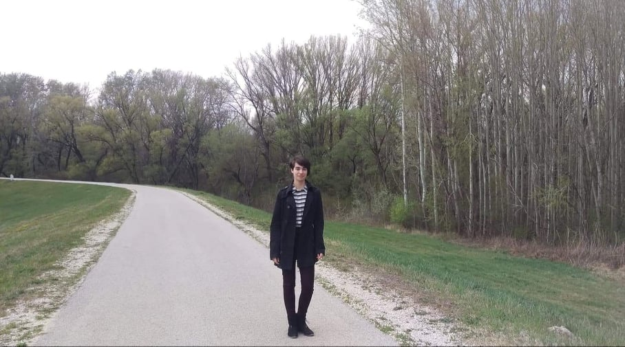

Üdvözöllek az oldalamon!
Dombi Julianna vagyok, első féléves energatikai mérnök hallgató. 19 éves vagyok és Tétről származom, egy Győr környéki kisvárosból. A Budapesti Műszaki Egyetemen kezdtem 2020-ban az energetikai mérnöki szakon. 10. osztályban jöttem rá, hogy az energetika az, ami engem a leginkább érdekel, mert nagyon szeretem a matekot, a fizikát, és mindig is valami olyannal akartam foglalkozni, amit ha jól csinálok, akkor a Föld számára is hasznos lehet. Tudom, hogy ezen a weboldalon saját portfólió munkákat és a szakmai önéletrajzi adataimat kellene megosztanom, de sajnos nekem ilyenjeim még nincsenek, ezért a hobbijaimról és céljaimról írok inkább, mert szerintem ezek azok a dolgok, amik nagyban meghatároznak egy embert.